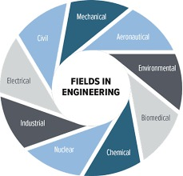

Fields of Engineering
Major Engineering Disciplines:
- Mechanical Engineering
- Electrical Engineering
- Civil Engineering
- Chemical Engineering
- Computer Engineering
- Aerospace Engineering
Engineering Career Guidance
Career Development Steps:
- Education Requirements
- Professional Certifications
- Industry Experience
- Networking Opportunities
- Career Advancement Paths

Why Engineering
Reasons to Choose Engineering:
- Innovation and Creativity
- Problem Solving
- High Career Growth
- Global Opportunities
- Competitive Salary
- Societal Impact

How to Pursue Engineering
Steps to Become an Engineer:
- Academic Prerequisites
- College Selection
- Entrance Exams
- Degree Programs
- Internships
- Professional Development